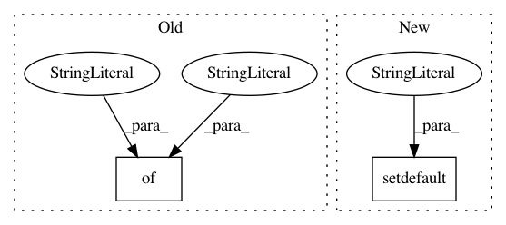

b8f4078a101db8f8ee0c0adf7864d8f90b544cfe,common/models/transducer/transducer_fullsum.py,,make_net,#,14
Before Change
// for task "search" / search_output_layer
"output_wo_b": make_output_without_blank("output", target=target),
"decision": {
"class": "decide", "from": "output_wo_b", "loss": "edit_distance", "target": target.key,
"only_on_search": True},
}
After Change
else:
raise TypeError(f"unexpected argument {k}={v!r}")
encoder_opts.setdefault("l2", l2)
decoder_opts.setdefault("l2", l2)
ctx = Context(task=task, beam_size=beam_size, target=target)
net = Net(
ctx=ctx,
encoder=EncoderBLstmCnnSpecAug(ctx=ctx, **encoder_opts),
In pattern: SUPERPATTERN
Frequency: 3
Non-data size: 2
Instances
Project Name: rwth-i6/returnn-experiments
Commit Name: b8f4078a101db8f8ee0c0adf7864d8f90b544cfe
Time: 2021-03-23
Author: albzey@gmail.com
File Name: common/models/transducer/transducer_fullsum.py
Class Name:
Method Name: make_net
Project Name: nilmtk/nilmtk
Commit Name: f0622cc5c1d6fc5c81b588a9c365731188fb5cae
Time: 2014-12-12
Author: jack-list@xlk.org.uk
File Name: nilmtk/electric.py
Class Name: Electric
Method Name: power_series
Project Name: ijmarshall/robotreviewer
Commit Name: a21e3a3288444b1a6e0d4477d62d39b198729b7e
Time: 2016-07-22
Author: mail@ijmarshall.com
File Name: robotreviewer/robots/bias_robot.py
Class Name: BiasRobot
Method Name: annotate